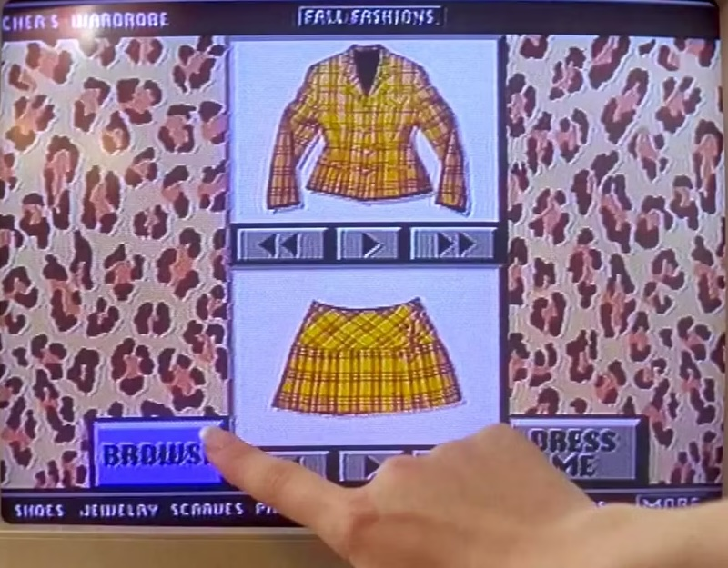

HACK 112 - "Clueless" Outfit Matcher
My first hackathon was a class-wide hackathon for CMU's introduction to programming (15-112). Every semester, students are given the option to participate in a hackathon sponsored by a few companies. During my freshman spring semester, me and a group worked to recreate the fashion selector scene from the movie "Clueless"!!